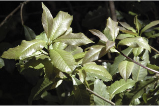
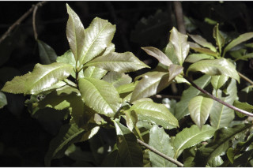
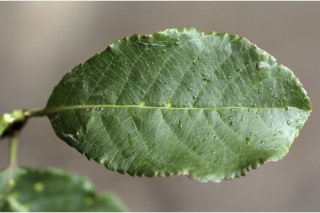
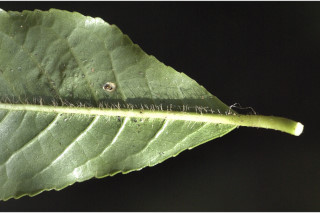
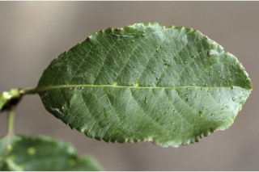
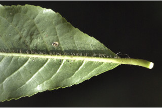

Small trees up to 8 m tall.
8 ಮೀ. ಎತ್ತರದವರೆಗಿನಸಣ್ಣ ಮರಗಳು.
Small trees up to 8 m tall.
சிறிய மரம் 8 மீ. உயரம் வரை வளரக்கூடியது.
Young branchlets terete, hirsute.
ಕಿರುಕೊಂಬೆಗಳು ದುಂಡಾಗಿದ್ದು ಒರಟು ರೋಮಗಳಿಂದ ಕೂಡಿರುತ್ತವೆ.
Young branchlets terete, hirsute.
சிறியநுனிக்கிளைகள் குறுக்குவெட்டுத் தோற்றத்தில் வளையமானது, உரோமங்களுடையது.
Leaves simple, alternate, spiral; petiole 0.5-1.5 cm long, planoconvex in cross section, hirsute when young; lamina 5.5-10 x 2.5-5 cm, elliptic-obovate or oblanceolate, apex rounded or shortly acuminate, base cuneate - attenuate or rounded, margin serrate and slightly undulate, coriaceous, glabrous or atleast sparsely hirsute on midrib beneath; midrib canaliculate above; secondary_nerves 8-14 pairs, looped near margin; tertiary_nerves broadly reticulate.
ಎಲೆಗಳು ಸರಳವಾಗಿದ್ದು ಪರ್ಯಾಯ ಮತ್ತು ಸುತ್ತು ಜೋಡನಾ ವ್ಯವಸ್ಥೆಯಲ್ಲಿರುತ್ತವೆ; ತೊಟ್ಟುಗಳು 0.5 –-1.5 ಸೆಂ.ಮೀ. ಉದ್ದವಿದ್ದು, ಅಡ್ಡ ಸೀಳಿದಾಗ ಸಪಾಟ ಪೀನ ಮಧ್ಯದ ಆಕಾರ ಹೊಂದಿರುತ್ತವೆ,ಎಳೆಯದಾಗಿದ್ದಾಗ ಒರಟು ರೋಮಗಳಿಂದ ಕೂಡಿರುತ್ತವೆ; ಪತ್ರಗಳು5.5– 10 X 2 .5–5 ಸೆಂ.ಮೀ. ಗಾತ್ರ, ಅಂಡವೃತ್ತ-ಬುಗುರಿ ಅಥವಾ ಬುಗುರಿ ಭರ್ಜಿಯ ಆಕಾರ ಹೊಂದಿದ್ದು,ದುಂಡಾದ ಅಥವಾ ಕಿರಿದಾಗಿ ಕ್ರಮೇಣ ಚೂಪಾಗುವ ಮಾದರಿಯ ತುದಿ, ಬೆಣೆ - ಒಳಬಾಗಿದ ಮಾದರಿಯ ಅಥವಾ ದುಂಡಾದ ಬುಡ ಹೊಂದಿದ್ದು ,ಅಂಚು ಗರಗಸ ದಂತಿತವಾಗಿರುತ್ತದೆ ಮತ್ತು ಸ್ವಲ್ಪಮಟ್ಟಿಗೆ ತರಂಗಿತವಾಗಿರುತ್ತದೆ ಪತ್ರಗಳ ಮೇಲ್ಮೈ ತೊಗಲನ್ನೋಲುವ ಮಾದರಿಯಲ್ಲಿದ್ದು ರೋಮರಹಿತವಾಗಿರುತ್ತವೆ ಅಥವಾಪತ್ರದ ತಳಭಾಗದ ಮಧ್ಯನಾಳದ ಮೇಲಾದರೂ ವಿರಳವಾದ ಒರಟು ರೋಮಗಳಿರುತ್ತವೆ; ಮಧ್ಯನಾಳ ಪತ್ರದ ಮೇಲ್ಭಾಗದಲ್ಲಿ ಕಾಲುವೆಗೆರೆ ಸಮೇತವಿರುತ್ತದೆ;ಎರಡನೇ ದರ್ಜೆಯ ನಾಳಗಳು 8 – 14 ಜೋಡಿಗಳಿದ್ದು ಅಂಚಿನ ಬಳಿ ಕುಣಿಕೆಗೊಂಡಿರುತ್ತವೆ;ಮೂರನೇ ದರ್ಜೆಯ ನಾಳಗಳು ವಿಶಾಲ ಜಾಲಬಂಧ ನಾಳ ವಿನ್ಯಾಸದಲ್ಲಿರುತ್ತವೆ.
Leaves simple, alternate, spiral; petiole 0.5-1.5 cm long, planoconvex in cross section, hirsute when young; lamina 5.5-10 x 2.5-5 cm, elliptic-obovate or oblanceolate, apex rounded or shortly acuminate, base cuneate - attenuate or rounded, margin serrate and slightly undulate, coriaceous, glabrous or atleast sparsely hirsute on midrib beneath; midrib canaliculate above; secondary_nerves 8-14 pairs, looped near margin; tertiary_nerves broadly reticulate.
இலைகள் தனித்தவை, மாற்றுஅடுக்கமானவை, சுழல் போன்று அமைந்தவை; இலைக்காம்பு 0.5-1.5 செ.மீ. நீளமானது, குறுக்குவெட்டுத் தோற்றத்தில் பிளேனோகான்வக்ஸ், இளம்பருவத்தில் உரோமங்களுடையது; இலை அலகு 5.5-10 x 2.5-5 செ.மீ., நீள்வட்டம்-தலைகீழ் முட்டை வடிவானது அல்லது தலைகீழ் ஈட்டி வடிவானது, அலகின் நுனி வட்டமானது அல்லது குட்டையான அதிக்கூரியது, அலகின் தளம் ஆப்பு வடிவானது-அட்டனுவேட் அல்லது வட்டமானது, அலகின் விளிம்பு ரம்ப பற்களுடையது மற்றும் சிறிது அலை போன்றது, கோரியேசியஸ், உரோமங்களற்றது அல்லது அலகின் கீழ்பரப்பில் மையநரம்பு தவிர பிற பகுதிகள் உரோமங்களற்றது; மையநரம்பு மேற்புறத்தில் அலகின் பரப்பைவிட பள்ளமானது; இரண்டாம் நிலை நரம்புகள் 8-14 ஜோடிகள், ஒன்றொடுன்று விளிம்பின் அருகில் (லுப்) இணைந்தவை; மூன்றாம் நிலை நரம்புகள் அகன்ற வலைப்பின்னல் போன்றவை.
Inflorescence spikes; flowers white, sessile.
ಪುಷ್ಪಮಂಜರಿ ಕದಿರು ಮಂಜರಿ ಮಾದರಿಯವು;ಹೂಗಳು ಬಿಳಿ ಬಣ್ಣ ಹೊಂದಿದ್ದು ತೊಟ್ಟುರಹಿತವಾಗಿರುತ್ತವೆ.
Inflorescence spikes; flowers white, sessile.
மஞ்சரி ஸ்பைக் வகை; மலர்கள் வெள்ளை நிறமானது, காம்பற்றது.
Drupe, ovoid.
ಡ್ರೂಪ್ಗಳು ಅಂಡದ ಆಕಾರದಲ್ಲಿರುತ್ತವೆ.
Drupe, ovoid.
உள்ளோட்டுத்தசைகனி (ட்ரூப்), முட்டை வடிவானது.
 


 


